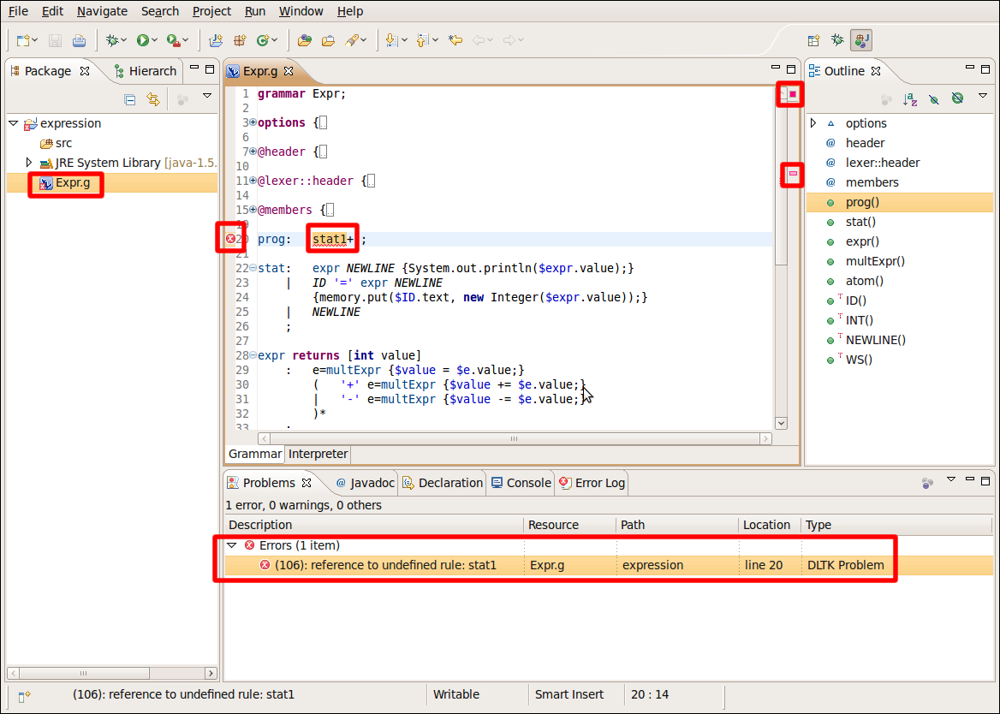
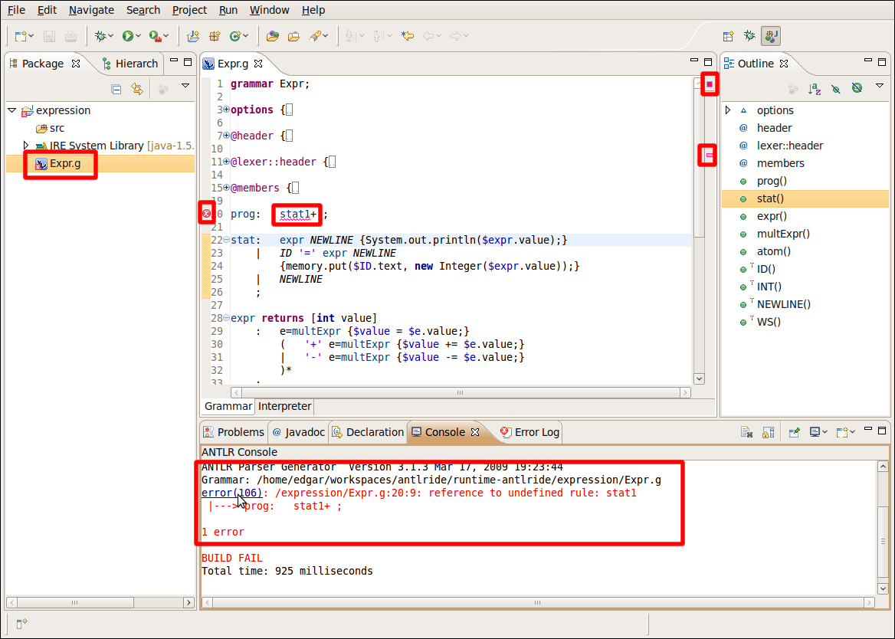

Identifying problems in your grammar
In this section, you will review the different indicators for
identifying problems in your code
Build problems are displayed in the Problems
View, Console View and annotated in the vertical ruler
of your grammar. The problems are reported when you save the file.
- Double click in Expr.g file to open it with the ANTLR editor
- Add a syntax error by calling an invalid rule. For example
replace "stat" for "stat1" in the program rule and save the file

- You can hover over the problem markers in the vertical ruler
to view a description of the problem. You can also hover over the
problem markers overview ruler
- In the Problems View, select a problem in the
list. Open its context menu and select Go To. The file
is opened in the editor at the location of the problem

- In the Problems Console, select the link
(error(1006)). The file is opened in the editor at the location of the
problem
- Revert the change, click the Save
button and all the indicators will be disappear